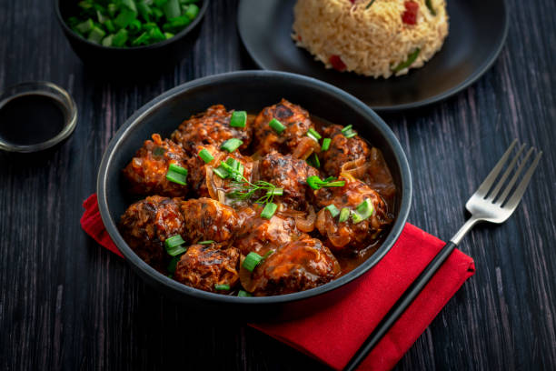

Korma:
A mild curry with a smooth sauce made with coconut milk, almonds, cardamom, and cinnamon
Paneer Butter Masala:

A rich and creamy curry made with soft cubes of paneer (Indian cottage cheese) simmered in a smooth, spiced tomato gravy with butter and cream.
Aloo Gobi:
A dry curry made with potatoes (aloo) and cauliflower (gobi), cooked in aromatic spices like cumin, turmeric, and garam masala.
Chana Masala:

A hearty curry made from chickpeas cooked in a tangy, spicy gravy of tomatoes, onions, and a blend of spices.
Dal Tadka (6 pieces):
A comforting lentil curry made from yellow lentils (toor dal) and cooked with tempering (tadka) of cumin, garlic, and ghee.